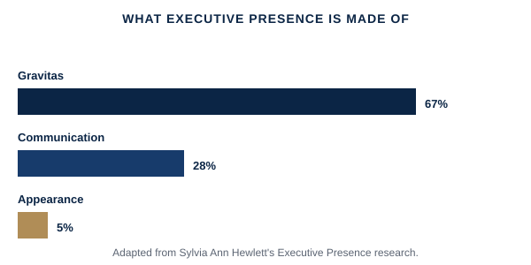

Being right isn't the same as being believed. This is about the specific, learnable behaviors that make people trust your judgment and want to follow you into a hard decision.
Being in the room where the real decision gets made, and still not being the voice people remember; walking into a board presentation well prepared, but not landing with the weight your content deserves; feeling like you have to work twice as hard to be seen as "ready" for the next level.
Economist and researcher Sylvia Ann Hewlett's widely cited research on executive presence — the "it factor" that makes senior leaders believable and worth following — breaks it down into three measurable components, weighted very differently: gravitas (how you act under pressure, your confidence and decisiveness — roughly two-thirds of the impression), communication (how you speak, including the ability to read a room and command it), and appearance (looking the part — a much smaller factor than most people assume, but not a zero one). The useful implication is that presence isn't something you either have or don't — gravitas in particular can be built deliberately, through how you handle high-stakes moments, not through trying to appear more confident than you are.

A simplified, educational adaptation of Sylvia Ann Hewlett's Executive Presence research.
The three components of executive presence — and which one actually matters most, according to the research.
Extended video (15-25 min), an original PDF framework/checklist, a practical application workbook, and a curated summary of Sylvia Ann Hewlett's Executive Presence and Amy Cuddy's research on presence under pressure.
Free if you’re an active coaching client · Subscription access for the general public opens soon.